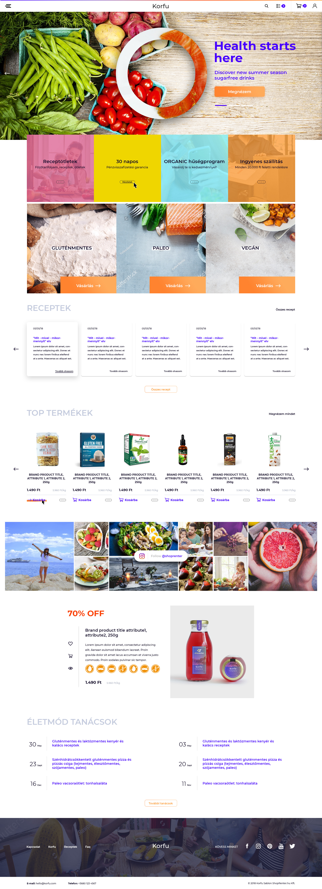

Overview
Az emberek vágynak az elismerésre, akár a cégtől vagy felettesüktől, akár más munkatársuktól érkezik ez. A Copper alapötlete a cégen belüli feedback adás megkönnyítése, ösztönzése volt. Az app segítségével a dolgozók könnyen és játékosan adhatnak visszajelzéseket egymásnak. Később pedig értékelésekkel és HR funkciókkal bővül. A projekt nehézségét az jelentette, hogy rövid idő alatt kellett elkészíteni a prototípust.
Adatok
- A munkavállalók 87%-a nem elégedett a munkahelyével (Gallup research)
- A munkavállalók 87%-a gondoskodó cégre vágyik, ami elismeri a munkatársait (Monster research)
- 64% az elismerés hiánya miatt hagyta ott a munkahelyét (Tapmyback szám)
- 4. Az USA-ban $17/hó/munkatárs költenek perks&benefits-re (Motivosity szám)
Célcsoport
A célcsoport meghatározásánál sokat vitáztunk, hogy ki is lenne az első: Team Leader vagy Team Member. Végül azok az emberek lettek, akik igazi véleményvezérek. Ez lehet egy Team Member, akinek a szavára adnak a munkatársak és meggyőzi a teljes csapatot a használatra, beleértve a Team Leader-t is. Ez az ember persze lehet maga a Team Leader is vagy akár egy HR-es is.
Konklúzióként egy user map-ot rajzoltunk fel.

Prototype
A kezdeti skiccek és wireframezés után létrejött a kész prototípusunk:
Landing page
Idő szűkében a lehető leggyorsabb landing paget kellett megszerkeszteni. Amit Unbounce segítségével fel is kellett húzni. Végül néhány hét promótálás után a validációs team úgy látta, hogy nem érdemes érdemi fejlesztésbe kezdeni, ezért a Copper projektet lelőttük. ennek ellenére sokat tanultam belőle és megérte a bele fektetett idő.
